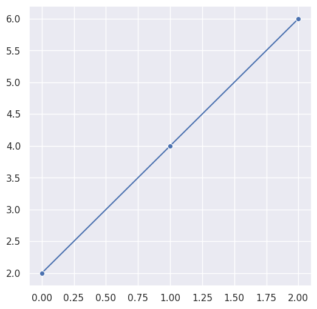

Premiers pas avec Python#
Ce notebook est un kit de survie : les concepts Python dont vous avez besoin pour le reste de la formation. Si vous savez déjà programmer en Python, survolez — vous connaissez probablement tout ça. Si Python est nouveau pour vous, ce notebook pose les bases.
Exécutez chaque cellule avec
Shift + Enteret observez le résultat avant de passer à la suivante.
Commentaires#
En Python, tous les caractères allant du # jusqu’à la fin de la ligne sont ignorés par l’interpréteur. Les commentaires servent à documenter votre code — en data science, ils sont essentiels pour expliquer pourquoi vous faites une transformation, pas juste comment.
La cellule suivante supprime les avertissements de version (FutureWarning) pour garder l’affichage propre — c’est une convention courante en début de notebook.
import warnings
warnings.simplefilter(action='ignore', category=FutureWarning)
# Premier commentaire
print("Hello, Python!"); # Deuxième commentaire
Hello, Python!
Sortie écran#
La fonction print() affiche du texte dans la console. Dans un notebook Jupyter, la dernière expression d’une cellule s’affiche automatiquement — mais print() reste utile quand on veut afficher plusieurs valeurs.
Python propose plusieurs façons de formater du texte. La méthode moderne et recommandée est la f-string (préfixe f"...") — elle est plus lisible que l’ancienne méthode .format() :
# Simple
print('Hello')
Hello
# Avec variable
nom = "Dupont"
prenom = 'Paul'
print (f'Hello {nom} {prenom}')
print ('Hello {0} {1}'.format( nom , prenom ) )
Hello Dupont Paul
Hello Dupont Paul
chaineFormatee= """Ceci est une chaîne
formatée."""
print(chaineFormatee)
Ceci est une chaîne
formatée.
Les variables#
Python est typé dynamiquement : pas besoin de déclarer le type d’une variable, Python le déduit tout seul. C’est pratique pour le prototypage rapide, mais attention : en data science, le type de vos données (numérique, texte, booléen) détermine ce que vos algorithmes peuvent en faire.
Les chaînes de caractères#
Les chaînes (str) sont omniprésentes en data science : noms de colonnes, catégories textuelles, labels… Python offre des outils puissants pour les manipuler.
Méthodes les plus utiles pour le nettoyage de données :
" Hello World ".strip() # → "Hello World" (supprime les espaces)
"Hello World".lower() # → "hello world"
"Hello World".replace("o", "0") # → "Hell0 W0rld"
"nom,prenom,age".split(",") # → ["nom", "prenom", "age"]
"-".join(["a", "b", "c"]) # → "a-b-c"
Ces méthodes sont cruciales quand on nettoie des données : .strip() pour les espaces parasites, .lower() pour normaliser la casse, .split() pour découper des chaînes en colonnes.
data = 'hello world'
print(data[0])
print(len(data))
print(data)
h
11
hello world
Les valeurs numériques#
Les types numériques sont le coeur du calcul en data science. Python distingue les entiers (int) des nombres à virgule flottante (float).
Conversion de types (casting) — essentiel quand on charge des données depuis un CSV (tout arrive en texte) :
int("42") # → 42 (texte vers entier)
float("3.14") # → 3.14 (texte vers décimal)
str(42) # → "42" (nombre vers texte)
int(3.7) # → 3 (troncature ! pas d'arrondi)
value = 123.1
print(value)
value = 10
print(value)
123.1
10
# Types numériques
val1 = 5 # entier (positif ou negatif)
val2 = 1.1 # float (partie décimale)
val3 = 11e-1 ; # float (notation scientifique)
val4 = complex(1, 2) # (nombre complexe de partie réelle 1 et imaginaire 2)
Les valeurs booléennes#
Python met à disposition un type bool avec deux valeurs : True et False. En data science, les booléens sont partout : filtrer des lignes d’un DataFrame, tester des conditions, créer des masques…
Particularité utile : True et False peuvent être convertis en valeurs numériques (1 et 0), ce qui permet de les utiliser dans des calculs (par exemple, compter le nombre de True avec sum()).
a = True
b = False
print(a, b)
print(a + 1)
print(b + 1)
True False
2
1
Déclarations multiples#
Python permet d’assigner plusieurs variables en une seule ligne. C’est un raccourci que vous verrez souvent.
a, b, c = 1, 2, 3
print(a, b, c)
1 2 3
Note : Le
;permet d’écrire plusieurs instructions sur une même ligne, mais c’est rarement utilisé en pratique. Préférez une instruction par ligne pour la lisibilité.
a, b, c = 1, 2, 3; print(a, b, c)
1 2 3
La valeur nulle : None#
None est l’équivalent Python du null des autres langages. En data science, c’est crucial : une valeur None dans vos données signifie une valeur manquante — et comme on l’a vu, les valeurs manquantes sont le quotidien du data scientist.
a = None
print(a)
assert a == None
None
Les structures de contrôle#
Les structures de contrôle permettent de diriger le flux d’exécution de votre programme. En Python, c’est l’indentation (4 espaces) qui délimite les blocs de code — pas d’accolades {} comme en Java ou C.
Les opérateurs de comparaison et logiques#
Avant d’écrire des conditions, il faut connaître les opérateurs :
Opérateur |
Signification |
Exemple |
|---|---|---|
|
Égal à (attention : |
|
|
Différent de |
|
|
Comparaisons |
|
|
ET logique |
|
|
OU logique |
|
|
Négation |
|
|
Appartenance |
|
|
Identité (même objet) |
|
Piège classique :
=(affectation) ≠==(comparaison). Écrireif x = 5au lieu deif x == 5est une erreur de syntaxe en Python.
if / elif / else#
La structure conditionnelle de base. La ligne d’en-tête se termine par : et le bloc indenté qui suit constitue la suite.
value = 99
if value == 99: # entête
print('Rapide !') # suite
elif value > 200:
print('Trop rapide')
else:
print('Prudent')
Rapide !
Boucle for#
La boucle for parcourt les éléments d’une séquence (liste, range, etc.). C’est la boucle la plus utilisée en Python.
for i in range(10):
print(i)
0
1
2
3
4
5
6
7
8
9
Boucle while#
La boucle while répète un bloc tant qu’une condition est vraie. Moins courante que for en data science, mais utile pour les cas où on ne connaît pas le nombre d’itérations à l’avance.
# While-Loop
i=0
while i < 10:
print(i)
i += 1
0
1
2
3
4
5
6
7
8
9
Les structures de données#
Python propose plusieurs structures de données intégrées. En data science, vous utiliserez surtout les listes et les dictionnaires — ce sont les briques de base sur lesquelles Pandas et NumPy sont construits.
L’indexation en Python (rappel fondamental)#
Python compte à partir de 0 (pas de 1). L’indexation négative part de la fin :
data = ["a", "b", "c", "d", "e"]
data[0] # → "a" (premier élément)
data[-1] # → "e" (dernier élément)
data[1:3] # → ["b", "c"] (borne supérieure EXCLUE)
data[::-1] # → ["e", "d", "c", "b", "a"] (inversé)
data[::2] # → ["a", "c", "e"] (un sur deux)
Cette syntaxe fonctionne partout : listes, chaînes, tuples, arrays NumPy.
Tuples#
Un tuple est une collection ordonnée et non modifiable (immutable). Une fois créé, on ne peut plus changer ses éléments. Utile pour des données qui ne doivent pas bouger (coordonnées GPS, dimensions d’une image…).
a = (1, 2, 3)
print(a[0])
print(a)
print(len(a))
try:
a[0] = 1
except TypeError as err:
print(err)
1
(1, 2, 3)
3
'tuple' object does not support item assignment
Listes#
Une liste est une collection ordonnée et modifiable. C’est la structure la plus flexible de Python — on peut ajouter, supprimer et modifier des éléments à volonté.
Méthodes courantes :
mylist = [3, 1, 4, 1, 5]
mylist.append(9) # Ajouter à la fin → [3, 1, 4, 1, 5, 9]
mylist.pop() # Retirer le dernier → [3, 1, 4, 1, 5]
mylist.sort() # Trier sur place → [1, 1, 3, 4, 5]
len(mylist) # Nombre d'éléments → 5
3 in mylist # Test d'appartenance → True
mylist = [1, 2, 3]
print(f'Zeroth Value: {mylist[0]}')
mylist.append(4)
print(f'List Length: {len(mylist)}')
for value in mylist:
print(value)
Zeroth Value: 1
List Length: 4
1
2
3
4
Dictionnaires#
Un dictionnaire associe des clés à des valeurs. C’est conceptuellement une ligne de votre dataset : chaque clé est un nom de colonne, chaque valeur est la donnée.
Méthodes à connaître :
d = {"nom": "Dupont", "age": 42}
d["nom"] # → "Dupont" (accès direct)
d["adresse"] # → KeyError ! La clé n'existe pas
d.get("adresse", "inconnue") # → "inconnue" (accès sûr avec défaut)
d.keys() # → dict_keys(["nom", "age"])
d.values() # → dict_values(["Dupont", 42])
for k, v in d.items(): # Itération sur clés ET valeurs
print(f"{k} = {v}")
Conseil : utilisez
.get(clé, défaut)plutôt qued[clé]quand la clé pourrait ne pas exister — ça évite lesKeyErrorqui plantent votre programme.
mydict = {'a': 1, 'b': 2, 'c': 3}
print("Value for a is: %d" % mydict['a'] )
mydict['a'] = 11
print(f"Value for a is: {mydict['a']}")
print(f"Keys: {mydict.keys()}")
print(f"Values: {mydict.values()}")
for key in mydict.keys():
print( mydict[key] )
Value for a is: 1
Value for a is: 11
Keys: dict_keys(['a', 'b', 'c'])
Values: dict_values([11, 2, 3])
11
2
3
Les fonctions#
Une fonction regroupe du code réutilisable. En data science, vous allez écrire des fonctions pour chaque transformation que vous appliquez à vos données.
Paramètres par défaut — très courants dans les bibliothèques data science :
def normaliser(valeur, min_val=0, max_val=1):
"""Normalise une valeur entre min_val et max_val."""
return (valeur - min_val) / (max_val - min_val)
normaliser(50) # utilise min=0, max=1 par défaut
normaliser(50, 0, 100) # on peut surcharger les défauts
normaliser(50, max_val=100) # ou nommer les paramètres
Les paramètres nommés (kwargs) sont omniprésents dans scikit-learn, Pandas, Matplotlib…
# fonction add
def add(x, y):
return x + y
# Test
assert add(1, 3) == 4
# Si on ommet le return, c'est None qui est retourné
def sub(x, y):
x - y
print(sub(4,3))
None
Compréhensions de liste#
C’est la version compacte d’une boucle for + append. Très utilisé en data science pour transformer ou filtrer des données en une ligne.
Python propose aussi map() et les fonctions lambda (fonctions anonymes) pour le même type d’opérations — mais les compréhensions sont généralement plus lisibles :
# Filtrer : garder seulement les valeurs positives
[x for x in [-2, 0, 3, -1, 5] if x > 0] # → [3, 5]
# On peut transformer des listes
a = range(10)
print(list(a))
b = [x**2 for x in a]
print(b)
[0, 1, 2, 3, 4, 5, 6, 7, 8, 9]
[0, 1, 4, 9, 16, 25, 36, 49, 64, 81]
# En utilisant des fonctions avec la fonction map
def square_it(x):
return x**2
a = range(10)
list(map(square_it, a))
[0, 1, 4, 9, 16, 25, 36, 49, 64, 81]
# Ou encore des lambda expressions (fonctions anonymes)
a = range(10)
list(map(lambda x: x**2, a))
[0, 1, 4, 9, 16, 25, 36, 49, 64, 81]
Les packages#
Un package est un regroupement physique de code Python. Il doit être installé sur votre système avant de pouvoir être importé dans votre code. Le programme pip est le gestionnaire de packages standard de Python — il télécharge et installe les packages depuis PyPI (Python Package Index).
# `!` permet d'exécuter une commande de l'OS
# Installation du package numpy
!pip install numpy
Requirement already satisfied: numpy in /opt/conda/lib/python3.11/site-packages (2.0.2)
Les bibliothèques (imports)#
Python est modulaire : les fonctionnalités sont réparties dans des modules qu’on importe. Il y a la bibliothèque standard (intégrée à Python : math, os, sys, json…) et les bibliothèques tierces qu’on installe via pip (numpy, pandas, seaborn, scikit-learn…).
Les alias comme np, pd, plt, sns sont des conventions que tout le monde utilise — adoptez-les.
enumerate() et zip() — patterns d’itération essentiels#
Deux fonctions intégrées que vous utiliserez constamment :
# enumerate : itérer avec un compteur
fruits = ["pomme", "banane", "cerise"]
for i, fruit in enumerate(fruits):
print(f"{i}: {fruit}")
# 0: pomme
# 1: banane
# 2: cerise
# zip : itérer sur plusieurs listes en parallèle
noms = ["Alice", "Bob", "Charlie"]
scores = [85, 92, 78]
for nom, score in zip(noms, scores):
print(f"{nom} : {score}")
# Alice : 85
# Bob : 92
# Charlie : 78
enumerate remplace le pattern maladroit for i in range(len(liste)). zip remplace l’accès par index liste1[i], liste2[i].
import math # Librairie standard
math.sqrt(4)
2.0
import seaborn as sns # le package doit avoir été installé au préalable
sns.set(rc={"figure.figsize": (6, 6)})
x=[0, 1, 2]
y=[2, 4, 6]
sns.lineplot(x=x, y=y, marker="o")
<Axes: >
